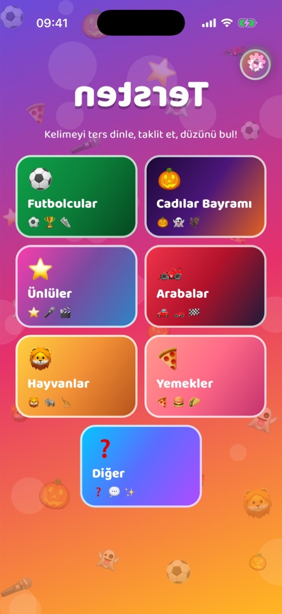
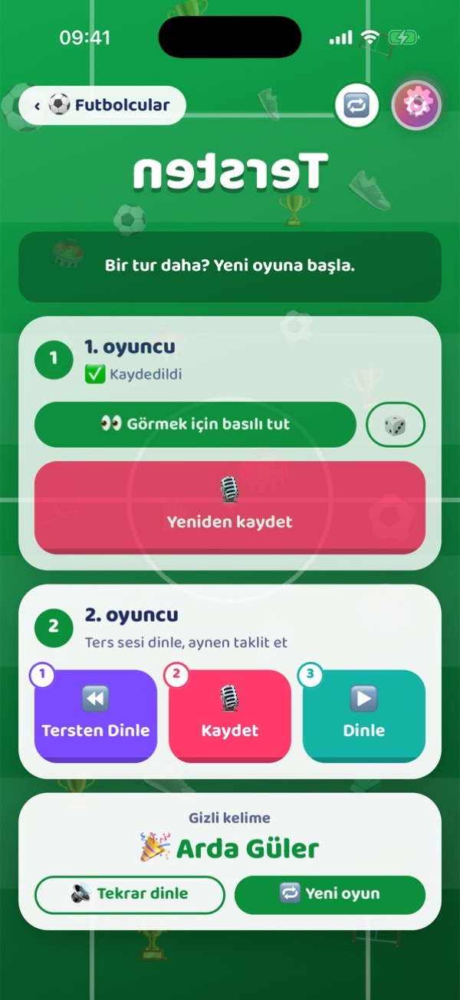
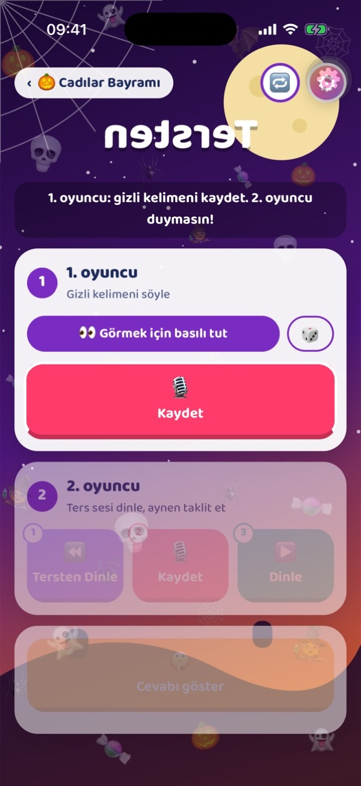
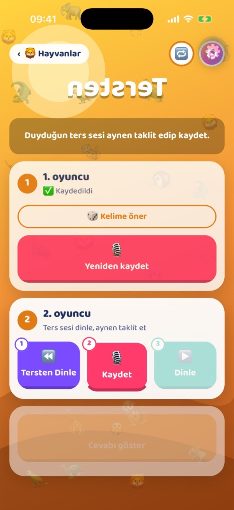
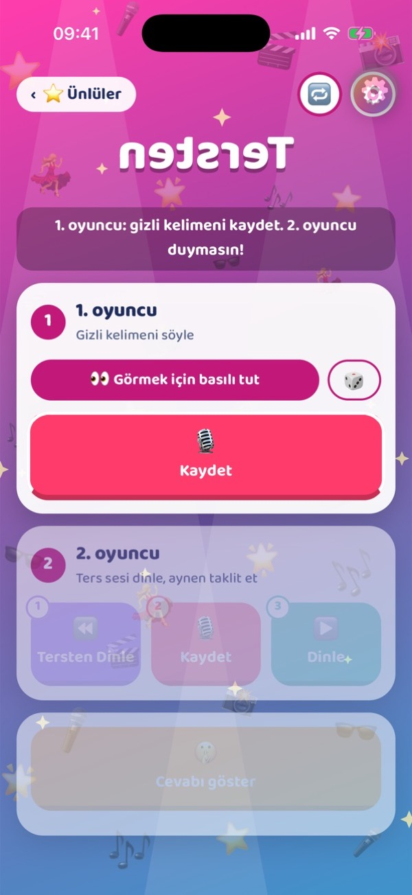
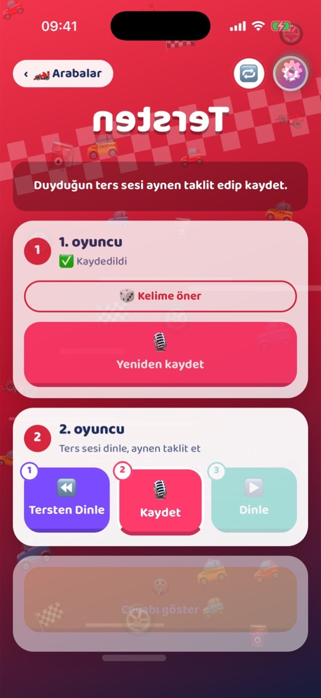
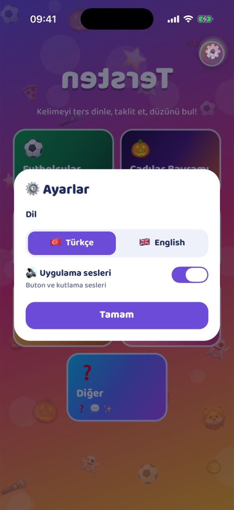

Tersten
Kelimeyi tersten dinlediğin, aynen taklit ettiğin, sonra taklidini düze çevirip aslında ne dediğini bulduğun parti oyunu.


Nasıl oynanır
İki oyuncu, tek telefon, bol kahkaha. Bir tur yaklaşık bir dakika sürer.
Gizli kelimeyi kaydet
1. oyuncu bir kelime seçer (ya da öneri için 🎲'a basar) ve 2. oyuncu duymadan kaydeder.
Tersini taklit et
2. oyuncu kelimeyi tersten dinler ve duyduğu tuhaf sesi olabildiğince aynen taklit eder.
Düze çevir, tahmin et
Uygulama 2. oyuncunun taklidini ters çevirir. Dinle, kelimeyi tahmin et, sonra cevabı aç.
Yedi konsept
Her konseptin kendi duvar kağıdı, sesleri ve kelime önerileri var. Türkçe ya da İngilizce.
Bir göz at
Ekranları kaydırarak gez.





Oyun geceleri için
Sesin telefonunda kalır
Kayıtlar cihazda ters çevrilir ve oyun bitince silinir. Hiçbir şey yüklenmez.
Türkçe ve İngilizce
Dili Ayarlar'dan değiştir. Kelime önerileri seçtiğin dile göre gelir.
Temaya özel sesler
Hakem düdüğü, hayalet "uuu"su, korna… İstediğin zaman kapatabilirsin.
Anında kayıt
Kaydet'e bas ve konuş. Bekleme yok, kurulum yok.